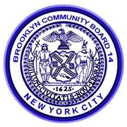
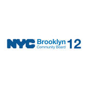
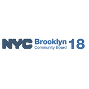
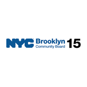
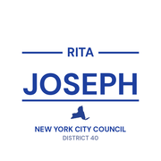
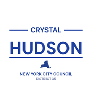
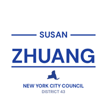
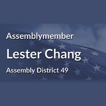
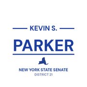
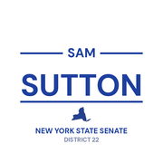

The district
 City Council
City Council State Assembly
State Assembly State Senate
State Senate Subway
Subway Citi Bike
Citi Bike NYC Ferry
NYC FerryTurn layers on and off. Tap an official's logo or a board's seal for its page. Zoning and land use lot by lot are on the land use map.
About
Representative Yvette Clarke represents New York’s 9th Congressional District in the United States House of Representatives. It sits in Brooklyn.
The district overlaps community boards Brooklyn 17, Brooklyn 14, Brooklyn 12, Brooklyn 18, Brooklyn 9, Brooklyn 8, Brooklyn 15, Brooklyn 11 and Brooklyn 16.
It is policed by the 61st, 62nd, 63rd, 66th, 67th, 69th, 70th, 71st, 73rd, 77th and 78th Precincts.
It overlaps council districts 35, 36, 39, 40, 41, 42, 43, 44, 45, 46 and 48, Assembly districts 41, 42, 43, 44, 45, 47, 48, 49, 55, 56, 57, 58 and 59 and Senate districts 17, 19, 20, 21, 22 and 25.
Members of the House serve two year terms, with no term limit.
Next on the ballot in November 2026. Find your poll site and sample ballot there, or see what is coming up on the calendar.
Congressional District 9 in numbers
U.S. Census Bureau, American Community Survey 2019-2023 5-year estimates.
Bills
Committees
Contact
222 Lenox Road, Suites 1 and 2
Brooklyn, NY 11226
Overlap
Community boards









Bars show how many of the district's election districts fall in each board.
Overlapping elected officials














| Brooklyn CB 17 | 22% of the district | 99% of it |
| Brooklyn CB 14 | 19% of the district | 98% of it |
| Brooklyn CB 12 | 15% of the district | 65% of it |
| Brooklyn CB 18 | 11% of the district | 20% of it |
| Brooklyn CB 9 | 11% of the district | 100% of it |
| Brooklyn CB 8 | 8% of the district | 78% of it |
| Brooklyn CB 15 | 7% of the district | 24% of it |
| Brooklyn CB 11 | 4% of the district | 17% of it |
| Brooklyn CB 16 | 1% of the district | 8% of it |
| Brooklyn park/airport area | 1% of the district | 14% of it |
| 67 Precinct | 22% of the district | 99% of it |
| 70 Precinct | 19% of the district | 98% of it |
| 66 Precinct | 15% of the district | 65% of it |
| 71 Precinct | 11% of the district | 100% of it |
| 63 Precinct | 10% of the district | 19% of it |
| 77 Precinct | 8% of the district | 84% of it |
| 61 Precinct | 7% of the district | 23% of it |
| 62 Precinct | 4% of the district | 17% of it |
| 73 Precinct | 1% of the district | 8% of it |
| 78 Precinct | 1% of the district | 5% of it |
| 69 Precinct | 1% of the district | 3% of it |
| Sector 66A | 8% of the district | 100% of it |
| Sector 70A | 7% of the district | 100% of it |
| Sector 70B | 6% of the district | 100% of it |
| Sector 67D | 6% of the district | 100% of it |
| Sector 61A | 5% of the district | 96% of it |
| Sector 67E | 5% of the district | 97% of it |
| Sector 63D | 4% of the district | 100% of it |
| Sector 66B | 4% of the district | 72% of it |
| Sector 67C | 4% of the district | 100% of it |
| Sector 70D | 4% of the district | 90% of it |
| Sector 66D | 4% of the district | 84% of it |
| Sector 63B | 4% of the district | 11% of it |
| Sector 67B | 4% of the district | 100% of it |
| Sector 67A | 4% of the district | 100% of it |
| School District 22 | 32% of the district | 35% of it |
| School District 17 | 24% of the district | 80% of it |
| School District 21 | 16% of the district | 32% of it |
| School District 18 | 15% of the district | 37% of it |
| School District 20 | 8% of the district | 15% of it |
| School District 16 | 2% of the district | 14% of it |
| School District 15 | 1% of the district | 3% of it |
| School District 23 | 1% of the district | 6% of it |
| Council District 45 | 27% of the district | 99% of it |
| Council District 44 | 18% of the district | 77% of it |
| Council District 40 | 17% of the district | 97% of it |
| Council District 35 | 8% of the district | 45% of it |
| Council District 41 | 8% of the district | 43% of it |
| Council District 48 | 6% of the district | 25% of it |
| Council District 36 | 4% of the district | 21% of it |
| Council District 39 | 4% of the district | 13% of it |
| Council District 42 | 3% of the district | 6% of it |
| Council District 46 | 2% of the district | 4% of it |
| Council District 43 | 2% of the district | 12% of it |
| Assembly District 58 | 16% of the district | 74% of it |
| Assembly District 42 | 14% of the district | 97% of it |
| Assembly District 43 | 14% of the district | 100% of it |
| Assembly District 41 | 14% of the district | 59% of it |
| Assembly District 48 | 13% of the district | 76% of it |
| Assembly District 44 | 8% of the district | 37% of it |
| Assembly District 45 | 7% of the district | 29% of it |
| Assembly District 55 | 3% of the district | 19% of it |
| Assembly District 47 | 3% of the district | 19% of it |
| Assembly District 57 | 3% of the district | 20% of it |
| Assembly District 59 | 2% of the district | 3% of it |
| Assembly District 56 | 2% of the district | 12% of it |
| Assembly District 49 | 1% of the district | 6% of it |
| Senate District 21 | 38% of the district | 73% of it |
| Senate District 22 | 26% of the district | 45% of it |
| Senate District 20 | 25% of the district | 62% of it |
| Senate District 19 | 5% of the district | 6% of it |
| Senate District 17 | 5% of the district | 12% of it |
| Senate District 25 | 1% of the district | 3% of it |